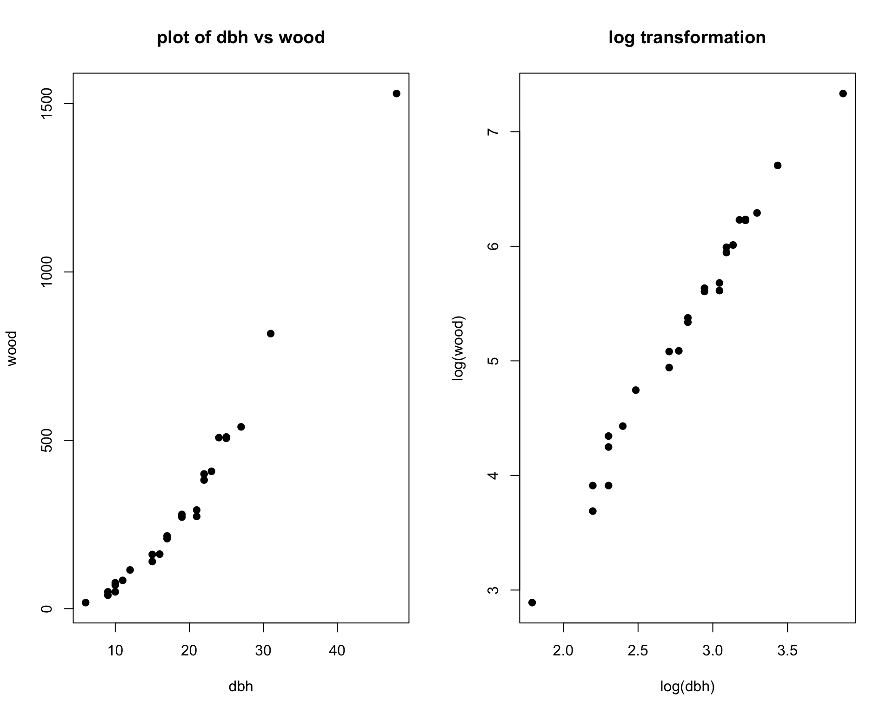
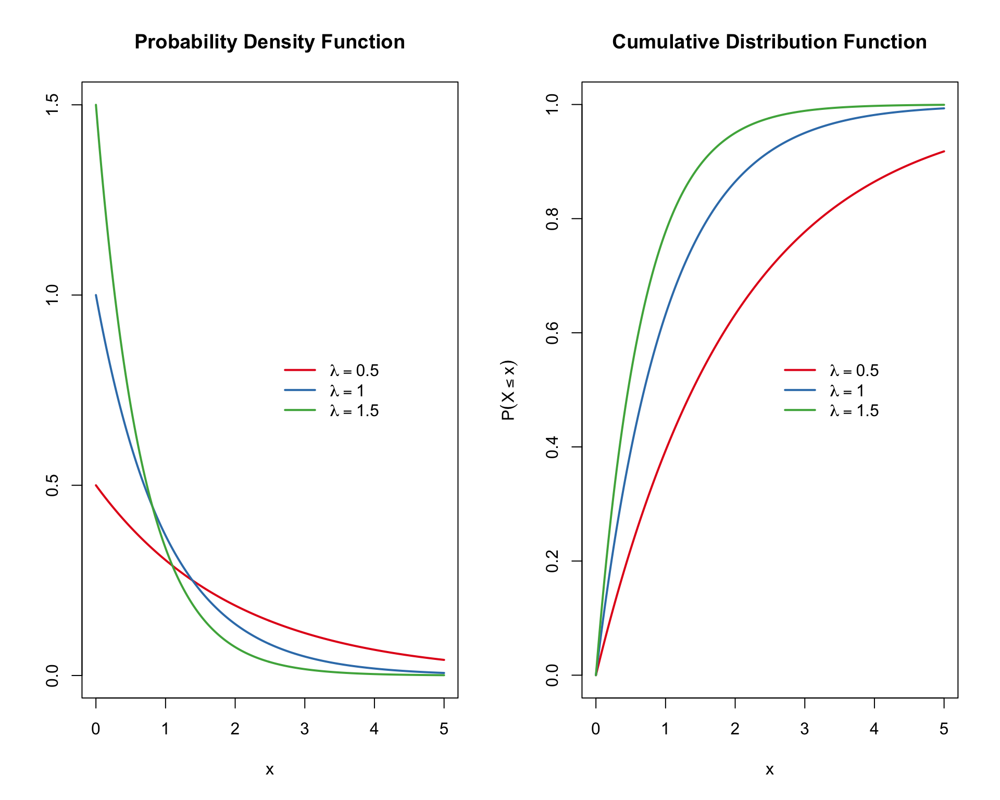
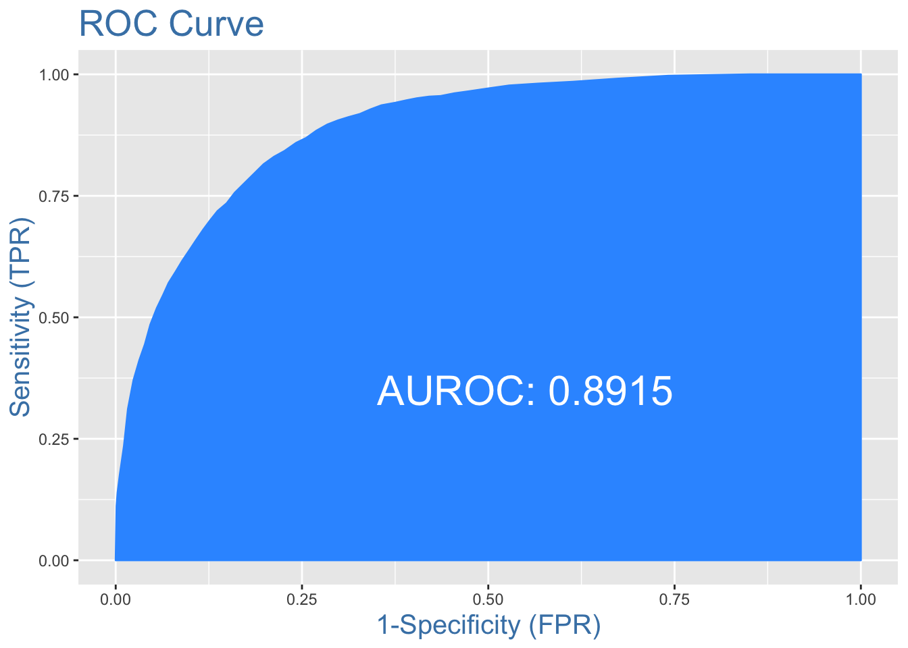
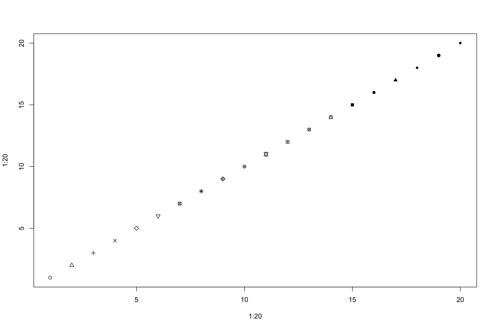
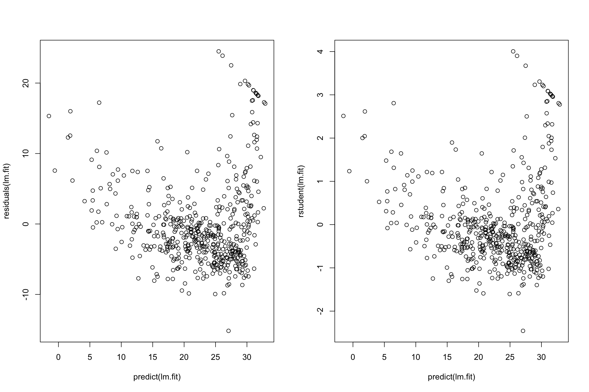

5 Casos de estudio
5.1 El ranking Forbes 2000 de las mayores empresas del mundo (año 2004)
Las técnicas de tratamiento y manipulación de datos explicadas se ilustrarán mediante un conjunto de datos de 2000 empresas líderes mundiales, la lista Forbes 2000 para el año 2004 recogida por la revista Forbes. Esta lista está disponible originalmente en www.forbes.com.
Aquí mostramos un subconjunto del conjunto de datos:
library("HSAUR2")
data("Forbes2000")| rank | name | country | category | sales | profits | assets | marketvalue |
|---|---|---|---|---|---|---|---|
| 1 | Citigroup | United States | Banking | 94.71 | 17.85 | 1264.03 | 255.30 |
| 2 | General Electric | United States | Conglomerates | 134.19 | 15.59 | 626.93 | 328.54 |
| 3 | American Intl Group | United States | Insurance | 76.66 | 6.46 | 647.66 | 194.87 |
| 4 | ExxonMobil | United States | Oil & gas operations | 222.88 | 20.96 | 166.99 | 277.02 |
| 5 | BP | United Kingdom | Oil & gas operations | 232.57 | 10.27 | 177.57 | 173.54 |
| 6 | Bank of America | United States | Banking | 49.01 | 10.81 | 736.45 | 117.55 |
Los datos consisten en 2.000 observaciones sobre las 8 variables siguientes.
rank: el ranking de la empresa.name: el nombre de la empresa.country: un factor que determina el país en el que está situada la empresa.category: un factor que describe los productos que produce la empresa.sales: el importe de las ventas de la empresa en miles de millones de USD.profits: el beneficio de la empresa en miles de millones de dólares.assets: los activos de la empresa en miles de millones de dólares.marketvalue: el valor de mercado de la empresa en miles de millones de dólares.
Tipos de variables
En la consola de R
str(Forbes2000)## 'data.frame': 2000 obs. of 8 variables:
## $ rank : int 1 2 3 4 5 6 7 8 9 10 ...
## $ name : chr "Citigroup" "General Electric" "American Intl Group" "ExxonMobil" ...
## $ country : Factor w/ 61 levels "Africa","Australia",..: 60 60 60 60 56 60 56 28 60 60 ...
## $ category : Factor w/ 27 levels "Aerospace & defense",..: 2 6 16 19 19 2 2 8 9 20 ...
## $ sales : num 94.7 134.2 76.7 222.9 232.6 ...
## $ profits : num 17.85 15.59 6.46 20.96 10.27 ...
## $ assets : num 1264 627 648 167 178 ...
## $ marketvalue: num 255 329 195 277 174 ...Factor levels
Nominal measurements are represented by factor variables in R, such as the country of the company or the category of the business segment.
A factor in R is divided into levels
How many countries are on the top 2000 ranking?
R command
nlevels(Forbes2000[,"country"])## [1] 61Which countries?
R command
levels(Forbes2000[,"country"])## [1] "Africa" "Australia"
## [3] "Australia/ United Kingdom" "Austria"
## [5] "Bahamas" "Belgium"
## [7] "Bermuda" "Brazil"
## [9] "Canada" "Cayman Islands"
## [11] "Chile" "China"
## [13] "Czech Republic" "Denmark"
## [15] "Finland" "France"
## [17] "France/ United Kingdom" "Germany"
## [19] "Greece" "Hong Kong/China"
## [21] "Hungary" "India"
## [23] "Indonesia" "Ireland"
## [25] "Islands" "Israel"
## [27] "Italy" "Japan"
## [29] "Jordan" "Kong/China"
## [31] "Korea" "Liberia"
## [33] "Luxembourg" "Malaysia"
## [35] "Mexico" "Netherlands"
## [37] "Netherlands/ United Kingdom" "New Zealand"
## [39] "Norway" "Pakistan"
## [41] "Panama/ United Kingdom" "Peru"
## [43] "Philippines" "Poland"
## [45] "Portugal" "Russia"
## [47] "Singapore" "South Africa"
## [49] "South Korea" "Spain"
## [51] "Sweden" "Switzerland"
## [53] "Taiwan" "Thailand"
## [55] "Turkey" "United Kingdom"
## [57] "United Kingdom/ Australia" "United Kingdom/ Netherlands"
## [59] "United Kingdom/ South Africa" "United States"
## [61] "Venezuela"And in the top 20?
R commands
top20 <- droplevels(subset(Forbes2000,rank<=20))
levels(top20[,"country"])## [1] "France" "Japan"
## [3] "Netherlands" "Netherlands/ United Kingdom"
## [5] "Switzerland" "United Kingdom"
## [7] "United States"As a simple summary statistic, the frequencies of the levels of such a factor variable can be found from
table(top20[,"country"])##
## France Japan
## 2 1
## Netherlands Netherlands/ United Kingdom
## 1 1
## Switzerland United Kingdom
## 1 3
## United States
## 11Which type of companies?
levels(Forbes2000[,"category"])## [1] "Aerospace & defense" "Banking"
## [3] "Business services & supplies" "Capital goods"
## [5] "Chemicals" "Conglomerates"
## [7] "Construction" "Consumer durables"
## [9] "Diversified financials" "Drugs & biotechnology"
## [11] "Food drink & tobacco" "Food markets"
## [13] "Health care equipment & services" "Hotels restaurants & leisure"
## [15] "Household & personal products" "Insurance"
## [17] "Materials" "Media"
## [19] "Oil & gas operations" "Retailing"
## [21] "Semiconductors" "Software & services"
## [23] "Technology hardware & equipment" "Telecommunications services"
## [25] "Trading companies" "Transportation"
## [27] "Utilities"How many of each category?
table(Forbes2000[,"category"])##
## Aerospace & defense Banking
## 19 313
## Business services & supplies Capital goods
## 70 53
## Chemicals Conglomerates
## 50 31
## Construction Consumer durables
## 79 74
## Diversified financials Drugs & biotechnology
## 158 45
## Food drink & tobacco Food markets
## 83 33
## Health care equipment & services Hotels restaurants & leisure
## 65 37
## Household & personal products Insurance
## 44 112
## Materials Media
## 97 61
## Oil & gas operations Retailing
## 90 88
## Semiconductors Software & services
## 26 31
## Technology hardware & equipment Telecommunications services
## 59 67
## Trading companies Transportation
## 25 80
## Utilities
## 110A simple summary statistics such as the mean, median, quantiles and range can be found from continuous variables such as sales
R command
summary(Forbes2000[,"sales"])## Min. 1st Qu. Median Mean 3rd Qu. Max.
## 0.010 2.018 4.365 9.697 9.547 256.330Simple Graphics
Chambers et al. (1983), “there is no statistical tool that is as powerful as a well chosen graph”
Histograms and boxplots
layout(matrix(1:4, nrow = 2,ncol=2))
hist(Forbes2000$marketvalue, col="lightgrey",main="Histogram of market value")
hist(log(Forbes2000$marketvalue),col="lightgrey",main="Histogram of log(market value)")
boxplot(Forbes2000$marketvalue, col="lightgrey",main="Boxplot of market value")
boxplot(log(Forbes2000$marketvalue),col="lightgrey",main="Boxplot of log(market value)")
Scatterplots to visualize the relationship betwen variables

Cool Graphics
Using the ggplot2 library
library(ggplot2)
#?qplot
qplot(marketvalue,data = Forbes2000)qplot(log(marketvalue), data = Forbes2000)qplot(marketvalue,sales, data=Forbes2000)qplot(log(marketvalue),log(sales),size=assets,alpha = I(0.1),data=Forbes2000)library(calibrate)
profits_all = na.omit(Forbes2000$profits) # all_profts without No data
order_profits = order(profits_all) # index of the profitable companies
# in decreasing order
top_50 = rev(order_profits)[1:50] # top 50 profitable companies
sales = Forbes2000$sales[top_50] # sales of the 50 top profitable companies
assets = Forbes2000$assets[top_50] # assets of the 50 top profitable companies
countries = Forbes2000$country[top_50] # countries where the 50 top profitable
# companies are found
plot(assets,sales,pch =1)
textxy(assets,sales, abbreviate(countries,2),col = "blue",cex=0.5) # used to put the
# countries where the companies are found
title(main = "Sales and Assets in billion
USD \n of the 50 most profitable companies ", col.main = "gray")Graphics by factor
Boxplots of the logarithms of the market value for four selected countries, the width of the boxes is proportional to the square roots of the number of companies.
tmp <- subset(Forbes2000,
country %in% c("United Kingdom", "Germany",
"India", "Turkey"))
tmp$country <- tmp$country[,drop = TRUE]
plot(log(marketvalue) ~ country, data = tmp, col = 3:6,
ylab = "log(marketvalue)", varwidth = TRUE)
Scatterplots by country
library(lattice)
xyplot(log(marketvalue)~log(sales)|country,data=tmp)
5.2 Melanoma maligno en los Estados Unidos
Fisher y Belle (1993) reportan tasas de mortalidad por melanoma maligno de la piel en hombres blancos durante el período 1950-1969, para cada estado del territorio continental de los Estados Unidos.
data("USmelanoma",package="HSAUR2")El conjunto de datos consiste en 48 observaciones sobre las siguientes 5 variables.
mortality: número de varones blancos muertos por melanoma maligno entre 1950 y 1969 por cada millón de habitantes.latitude: latitud del centro geográfico del estado.longitude: longitud del centro geográfico de cada estado.ocean: una variable binaria que indica la contigüidad a un océano a nivelesnoosí.
Gráficos de las tasas de mortalidad
xr <- range(USmelanoma$mortality) * c(0.9, 1.1)Dibujemos las tasas de mortalidad en
#layout(matrix(1:2, nrow = 2))
boxplot(USmelanoma$mortality, ylim = xr, horizontal = TRUE,xlab = "Mortality")
hist(USmelanoma$mortality, xlim = xr, xlab = "", main = "",axes = FALSE, ylab = "")
axis(1)Tasas de mortalidad por melanoma maligno por contigüidad a un océano:
plot(mortality ~ ocean, data = USmelanoma, xlab = "Contiguity to an ocean", ylab = "Mortality")
Los histogramas a menudo pueden ser engañosos a la hora de mostrar distribuciones debido a su dependencia del número de clases elegidas. Una alternativa es estimar formalmente la función de densidad de una variable y luego trazar la estimación resultante.
Las densidades estimadas de las tasas de mortalidad por melanoma maligno por contigüidad a un océano se ven así:
dyes <- with(USmelanoma, density(mortality[ocean == "yes"]))
dno <- with(USmelanoma, density(mortality[ocean == "no"]))
plot(dyes, lty = 1, xlim = xr, main = "", ylim = c(0, 0.018))
lines(dno, lty = 2)
legend("topright", lty = 1:2, legend = c("Coastal State","Land State"), bty = "n")
Ahora podríamos pasar a ver cómo se relacionan las tasas de mortalidad con la ubicación geográfica de un estado, representada por la latitud y longitud del centro del estado.
layout(matrix(1:2, ncol = 2))
plot(mortality ~ -longitude, data = USmelanoma)
plot(mortality ~ latitude, data = USmelanoma)
5.3 Mapeo de las tasas de mortalidad
Los datos contienen la longitud y latitud de los centroides
plot(-USmelanoma$longitude,USmelanoma$latitude,asp=1.5,cex=.3,pch=19,col="blue")
library("sp")
library("maps")
library("maptools")
library("RColorBrewer")
map("state")
points(-USmelanoma$longitude,USmelanoma$latitude,asp=1.5,cex=.3,pch=19,col="blue")
#Create a function to generate a continuous color palette
rbPal <- colorRampPalette(c('blue','grey','red'))
#This adds a column of color values
# based on the y values
USmelanoma$Col <- (rbPal(10)[as.numeric(cut(USmelanoma$mortality,breaks = 10))])
map("state",xlim=c(-135,-65))
points(-USmelanoma$longitude,USmelanoma$latitude,col=USmelanoma$Col,asp=1.5,pch=19,cex=1.2)
legend("topleft",title="Decile",
legend=quantile(USmelanoma$mortality,seq(0.1,1,l=10)),col =rbPal(10),pch=15,cex=1.,box.col = NA)
states <- map("state", plot = FALSE, fill = TRUE)
IDs <- sapply(strsplit(states$names, ":"), function(x) x[1])
rownames(USmelanoma) <- tolower(rownames(USmelanoma))
us1 <- map2SpatialPolygons(states, IDs=IDs,proj4string = CRS("+proj=longlat +datum=WGS84"))
us2 <- SpatialPolygonsDataFrame(us1, USmelanoma)
col <- colorRampPalette(c('blue', 'gray80','red'))
spplot(us2, "mortality", col.regions = col(200),
par.settings = list(axis.line = list(col = 'transparent')),
main="Map of the US showing malignant melanoma mortality rates")